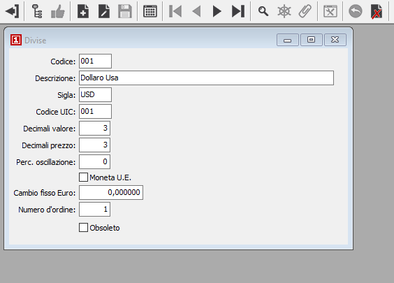
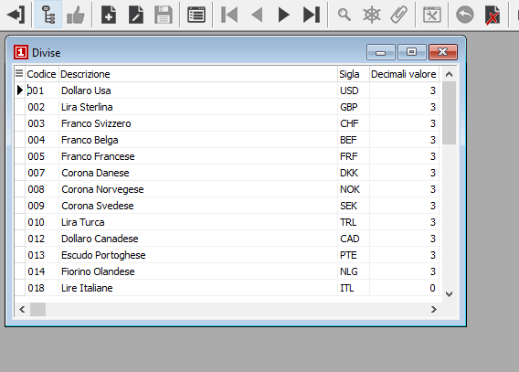

Modalità di manutenzione tabelle
Normalmente i programmi di manutenzione tabelle si predispongono in formato “dettaglio” e in situazione di visualizzazione, come illustrato in figura. La stampa delle tabelle può essere attivata mediante pressione del bottone Stampa della barra degli strumenti o mediante la pressione della combinazione di tasti Ctrl+F2.
Stato “dettaglio”
La situazione di visualizzazione si evince dal bottone Dettaglio che risulta presente sulla barra degli strumenti (attivo o disattivo).

È possibile scorrere, sempre in situazione di visualizzazione, gli elementi della tabella utilizzando i bottoni che rappresentano le frecce.
Dovendo inserire un nuovo elemento, occorre attivare il caricamento cliccando sul bottone Nuovo o usando il tasto F4. Al termine occorre salvare tramite il bottone Salva o il tasto F10.
Dovendo modificare un elemento, occorre prima individuarlo sia scorrendo tramite i bottoni freccia, sia aprendo le finestre di ricerca tramite tasto F9. Visualizzato l’elemento da modificare, occorre attivare la modifica cliccando sul bottone Modifica o usando il tasto F3. Naturalmente il codice dell’elemento non è modificabile e, al termine della variazione, occorre salvare tramite il bottone Salva o il tasto F10.
Dovendo cancellare un elemento, occorre prima individuarlo sia scorrendo tramite i bottoni freccia, sia aprendo le finestre di ricerca tramite il tasto F9. Visualizzato l’elemento da cancellate, occorre attivare la cancellazione cliccando sul bottone Cancella o usando il tasto F5. In caso di elementi di tabelle legati a dati contabili o gestionali, la cancellazione viene permessa solo se l’elemento non è mai stato utilizzato.
Stato “tabella”
Sulle tabelle non collegate è possibile operare anche in modalità “tabella”. Ciò si ottiene cliccando, ove previsto, sul bottone Tabella.

L’attivazione del formato tabella determina la modifica della finestra di input, che si presenta con l’aspetto di griglia. Le modalità di navigazione all’interno della griglia si modificano, perché per passare da una cella ad un’altra si utilizzano i tasti Freccia destra, Freccia sinistra, Freccia su, Freccia giù, oltre che, ovviamente, tramite mouse.
Restano invariate le modalità di attivazione degli stati di Caricamento, Modifica e Cancellazione.